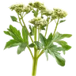
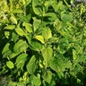
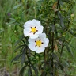

Correspondence Grimoire
Bronchitis
Type
Oils56

Angelica Root Essential Oil
Lemon Balm Essential OilLemon Essential Oil
Rock Rose Essential OilRecipes1
Bronchitis Therapeutic Index
Definition
Bronchitis is inflammation of the bronchial tubes that carry air to and from the lungs. Acute bronchitis is usually viral and follows a cold or flu; chronic bronchitis is a long-term condition often tied to smoking or repeated irritant exposure. Symptoms include persistent cough, mucus production, wheezing, chest tightness, sore throat, and fatigue.
Indicated Oils
Application Methods
- Massage: Dilute 2-3% in a carrier oil and massage gently into the chest, upper back, throat, and shoulders using slow upward strokes. Supports drainage and warms the chest.
- Vaporizer/Diffuser: Add 4-6 drops to an electric diffuser or aroma vaporizer to perfume the room. Useful for clearing the airways and easing night-time coughing.
- Inhalation: Place 1-2 drops on a tissue and inhale gently, or add to a bowl of hot (not boiling) water and inhale the steam under a towel for 5-10 minutes. Skip steam if wheezing or asthmatic tendency is present.
Suggested Blends
Decongestant Chest Rub
- 4 drops Eucalyptus Essential Oil
- 3 drops Scotch Pine Essential Oil
- 2 drops Frankincense Essential Oil
- 1 drop Common Thyme Essential Oil
- 1 oz (30ml) sweet almond or jojoba carrier
Steam Inhalation Blend
- 2 drops Eucalyptus Essential Oil
- 1 drop Niaouli Essential Oil
- 1 drop Tea Tree Essential Oil
Night-time Diffuser Blend
- 3 drops Frankincense Essential Oil
- 2 drops Atlas Cedarwood Essential Oil
- 1 drop Myrrh Essential Oil
Cross-References
- See also: Asthma